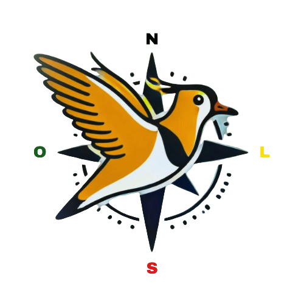

Objetivo
O Ecoexplora monitora animais extintos no Rio Grande do Sul e educa os usuários sobre a biodiversidade local. O app fornece informações detalhadas sobre cada espécie, ajudando na conscientização ambiental e na preservação da fauna.
Tecnologias
No back-end, emprega Spring Boot e MySQL, garantindo uma API eficiente e escalável, hospedada na Render. O front-end é desenvolvido no Android Studio, utilizando Java para uma experiência nativa e otimizada.
Funcionalidades
O Ecoexplora oferece diversas funcionalidades para explorar e monitorar animais extintos e ameaçados no Rio Grande do Sul. Os usuários podem acessar um catálogo de espécies com informações detalhadas, imagens e status de conservação. Além disso, o app permite o registro de avistamentos, contribuindo para a atualização de dados e a conscientização ambiental.